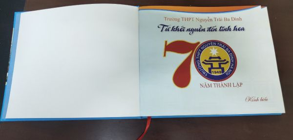

Hướng tới kỉ niệm 70 năm ngày thành lập trường
Trường THPT Nguyễn Trãi được thành lập từ những năm bốn mươi của thế kỷ XX. Những ngày đầu thành lập còn khó khăn, trải qua 70 năm xây dựng và phát triển, các thế hệ cán bộ, giáo viên, nhân viên Nhà trường luôn kiên trì phấn đấu, nỗ lực vượt qua mọi khó khăn, thử thách để hoàn thành xuất sắc mục tiêu giáo dục. Hơn 70 năm xây dựng và phát triển, các thế hệ nhà giáo đã gửi gắm biết bao tâm huyết và tình cảm, cống hiến trí tuệ và công sức cho sự nghiệp giáo dục .Từ mái trường này, nhiều thế hệ học sinh ưu tú đã trưởng thành, đem trí tuệ, tài năng và nhiệt huyết góp phần vào sự nghiệp xây dựng và bảo vệ Tổ quốc.

Cuốn kỷ yếu gồm có 5 phần:
- Phần thứ I: THPT Nguyễn Trãi – Ba Đình, theo dòng lịch sử.
- Phần thứ II: THPT Nguyễn Trãi – Ba Đình, những người thầy trụ cột.
- Phần thứ III: THPT Nguyễn Trãi – Ba Đình, lấp lánh ánh sao Khuê.
- Phần thứ IV: THPT Nguyễn Trãi – Ba Đình trong trái tim tôi.
- Phần thứ V: THPT Nguyễn Trãi – Ba Đình, in dấu thời gian.
Cuốn sách kỉ niệm 70 năm của trường THPT Nguyễn Trãi
Cuốn kỷ yếu gồm có 5 phần:
- Phần thứ I: THPT Nguyễn Trãi – Ba Đình, theo dòng lịch sử.
- Phần thứ II: THPT Nguyễn Trãi – Ba Đình, những người thầy trụ cột.
- Phần thứ III: THPT Nguyễn Trãi – Ba Đình, lấp lánh ánh sao Khuê.
- Phần thứ IV: THPT Nguyễn Trãi – Ba Đình trong trái tim tôi.
- Phần thứ V: THPT Nguyễn Trãi – Ba Đình, in dấu thời gian.